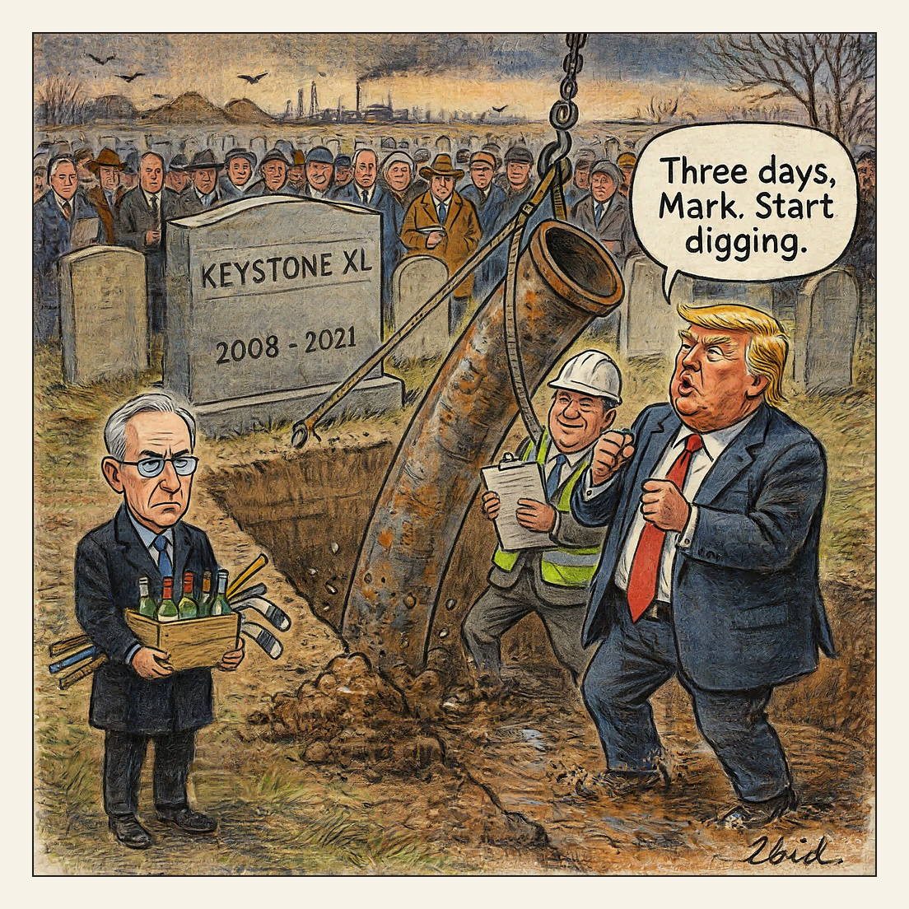

Subject to the finalization of documents.
Grave Goods

Trump paused a threatened 50% tariff on Canada for three days, hours before it would have hit about $20bn of goods including wine and hockey sticks. In the same post he said a deal had been reached "subject to the finalization of documents" and that the Keystone XL pipeline "may be awoken from the grave." The 1,200-mile project was abandoned by TC Energy in 2021 after Biden revoked its permit; Canada says under 1% of fentanyl seizures and illegal crossings originate on its border.